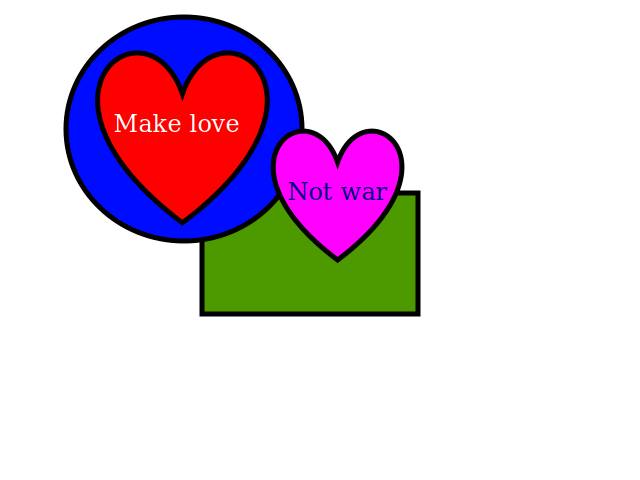

En videotagg
Media är ju väldigt viktigt när man gör en hemsida, och här kommer ett
ett exempel på en snygg liten videotagg. Vill tacka
Big Buck Bunny
för lånet av trailern!
Skrivet av Johanna, 2013-09-17
En bild
Här kommer då blogginlägg nummer två. Har gjort vektorkonst, lite
annorlunda än den konst jag brukar skapa ;-)

Skrivet av Johanna, 2013-09-19
Min grymma kursblogg!
Här har jag startat min första blogg, och här kommer jag att lägga upp mina laborationer som jag gör under kursens gång.
Skrivet av Johanna, 2013-09-16